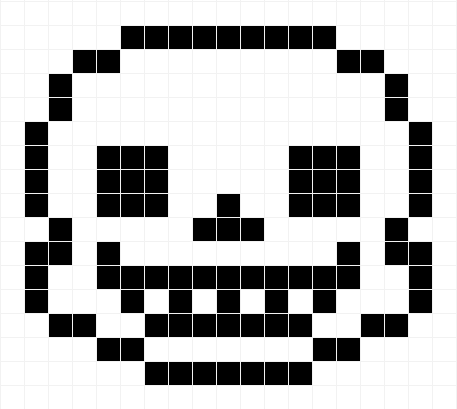
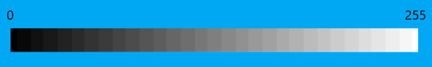
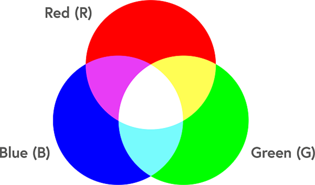
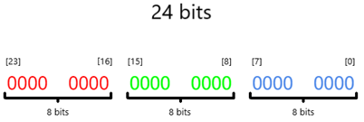
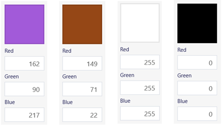

Theo wikipedia, một pixel hay một điểm ảnh là một khối màu rất nhỏ và là đơn vị cơ bản nhất để tạo nên một bức ảnh kỹ thuật số. Mỗi một điểm ảnh chỉ biểu diễn một màu duy nhất, kết hợp các điểm ảnh sẽ tạo nên một bức ảnh hoàn chỉnh.
Màu mà điểm ảnh biểu diễn phụ thuộc vào số lượng bit dùng để lưu trữ điểm ảnh đó. Nếu sử dụng n bit để lưu trữ, một điểm ảnh có thể biểu diễn 2n màu riêng biệt.
Ví dụ 1: Ảnh nhị phân. Vì sử dụng 2 bit để lưu trữ, nên điểm ảnh chỉ có thể biểu diễn hai màu là: đen và trắng. Dùng bit 0 cho màu đen, bit 1 cho màu trắng hoặc ngược lại.
Ví dụ 2: Ảnh Đa mức xám (Grayscale). Vì sử dụng 8 bit để lưu trữ, nên điểm ảnh biểu diễn được 28 = 256 màu, có giá trị trong [0, 255].
Ví dụ 3: Ảnh màu (Red-Green-Blue; RGB). Vì sử dụng 24 bit để lưu trữ, nên số màu mà điểm ảnh biểu diễn được là 224 = 16777216 màu, có giá trị trong [0, 16777215].
Điểm ảnh RGB được lưu trữ như sau: Chia 24 bit thành ba đoạn, mỗi đoạn dài 8 bit và biểu diễn cho một tông màu nhất định. Với bit thứ 0 thuộc về màu xanh dương và bit thứ 23 thuộc về màu đỏ. Ba màu riêng biệt, mỗi màu có 28 = 256 mức sáng, chúng kết hợp với nhau tạo nên 2563 = 16777216 màu.
Với các mức sáng ngẫu nhiên của Red-Green-Blue, chúng kết hợp với nhau tạo nên các màu khác biệt.
